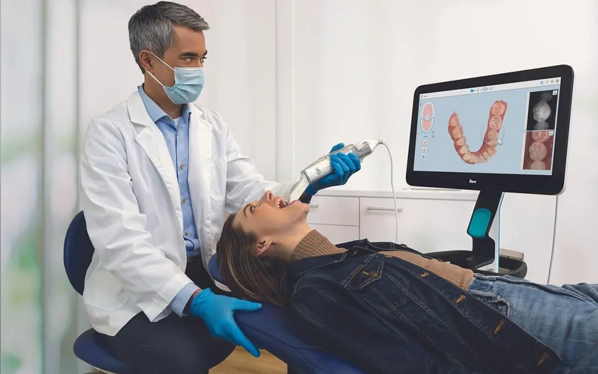

O que é o escaneamento intraoral 3D?
O escaneamento intraoral é uma tecnologia avançada que utiliza um scanner óptico para capturar, em tempo real, imagens tridimensionais detalhadas das arcadas dentárias do paciente. Essas imagens são processadas por um software especializado que gera um modelo digital 3D completo — um verdadeiro "molde digital" — em formato STL, padrão universalmente utilizado na odontologia digital.
Na Clínica Radix, o escaneamento intraoral digital é realizado com equipamentos modernos que proporcionam alta precisão, rapidez na aquisição de imagens e excelente capacidade de visualização das estruturas dentárias, eliminando completamente a necessidade dos moldes físicos tradicionais.
Máximo conforto para o paciente
Uma das maiores vantagens do escaneamento intraoral é o conforto. O exame substitui as moldagens convencionais com pastas e moldeiras, eliminando os desconfortos mais comuns associados a esse procedimento, como:
- Náuseas e sensação de sufocamento provocadas pela moldeira na boca
- Sabor desagradável das pastas de moldagem
- Tempo de espera para a presa do material
- Necessidade de repetição em caso de moldes imperfeitos
Com o scanner intraoral, basta passar o dispositivo pelas arcadas dentárias e o modelo 3D é formado na tela do computador em tempo real — de forma rápida, limpa e totalmente indolor.
Simulação de resultados do tratamento
Outra grande vantagem é a possibilidade de simulação de resultados. A partir do modelo 3D obtido no escaneamento, o cirurgião-dentista consegue apresentar ao paciente previsões visuais do tratamento, mostrando como ficarão os dentes após a ortodontia, próteses ou reabilitações estéticas.
Isso aumenta significativamente o engajamento do paciente com o plano de tratamento, além de tornar o processo de decisão mais transparente e seguro.
Conectividade com laboratórios e aplicações clínicas
Os arquivos digitais gerados pelo escaneamento podem ser enviados diretamente para os laboratórios de escolha do profissional solicitante, otimizando o fluxo de trabalho e eliminando etapas físicas. Entre as principais aplicações estão:
- Alinhadores ortodônticos (invisíveis) — como Invisalign e similares
- Próteses fixas e removíveis planejadas digitalmente
- Guias cirúrgicas para implantes dentários
- Modelos impressos em 3D para estudo ou planejamento
- Restaurações CAD/CAM (coroas, onlays, facetas)
- Placas oclusais e de bruxismo personalizadas
Exportação STL aberta — total liberdade
Uma característica fundamental do serviço oferecido pela Radix é a exportação em STL aberto. Isso significa que os arquivos gerados são compatíveis com qualquer sistema ou laboratório, sem amarras de marcas proprietárias. O cirurgião-dentista tem total liberdade para utilizar o arquivo no software e no laboratório de sua preferência.
Além disso, os arquivos STL podem ser integrados ao exame de Tomografia Cone Beam, permitindo planejamentos cirúrgicos avançados — como a confecção de guias para implantes dentários com alta precisão, unindo as informações do osso e dos dentes em um único ambiente digital.
Como é feito o escaneamento intraoral?
O procedimento é simples, rápido e totalmente não invasivo:
- O paciente é acomodado confortavelmente na cadeira
- A equipe realiza uma breve limpeza/secagem da cavidade bucal
- O scanner intraoral é passado lentamente pelos dentes das arcadas superior e inferior
- As imagens 3D vão sendo formadas em tempo real no computador
- Também é realizado o registro da mordida (oclusão)
- Em poucos minutos, o modelo digital completo está pronto
- O arquivo STL é exportado e enviado ao profissional solicitante
Onde fazer escaneamento intraoral em Taquaritinga?
A Radix Radiologia Odontológica é referência em exames digitais em Taquaritinga e região. Localizada na Praça Dr. José Furiatti, 184, Centro, conta com equipamentos de última geração e equipe treinada para oferecer o que há de mais moderno em odontologia digital. Atendemos pacientes encaminhados por cirurgiões-dentistas de toda a região que buscam precisão, conforto e integração digital para seus tratamentos.